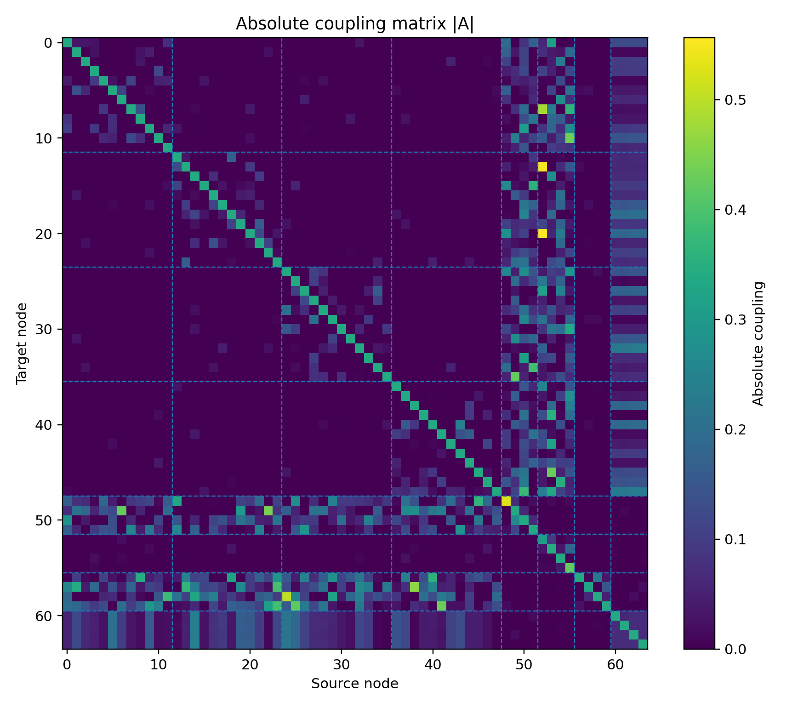
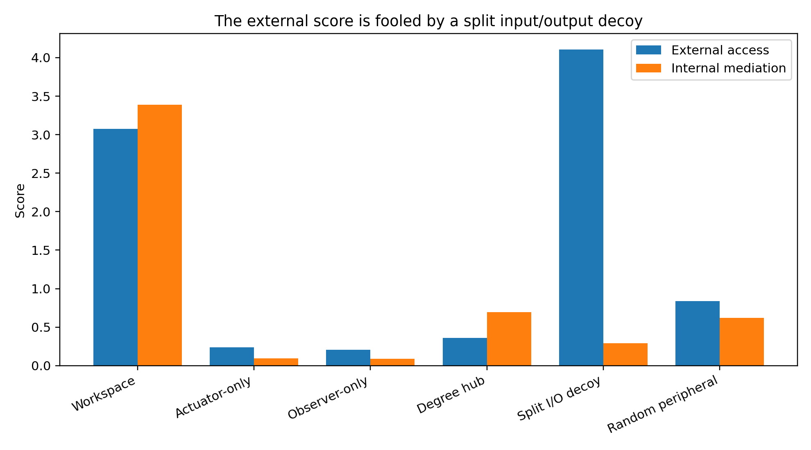
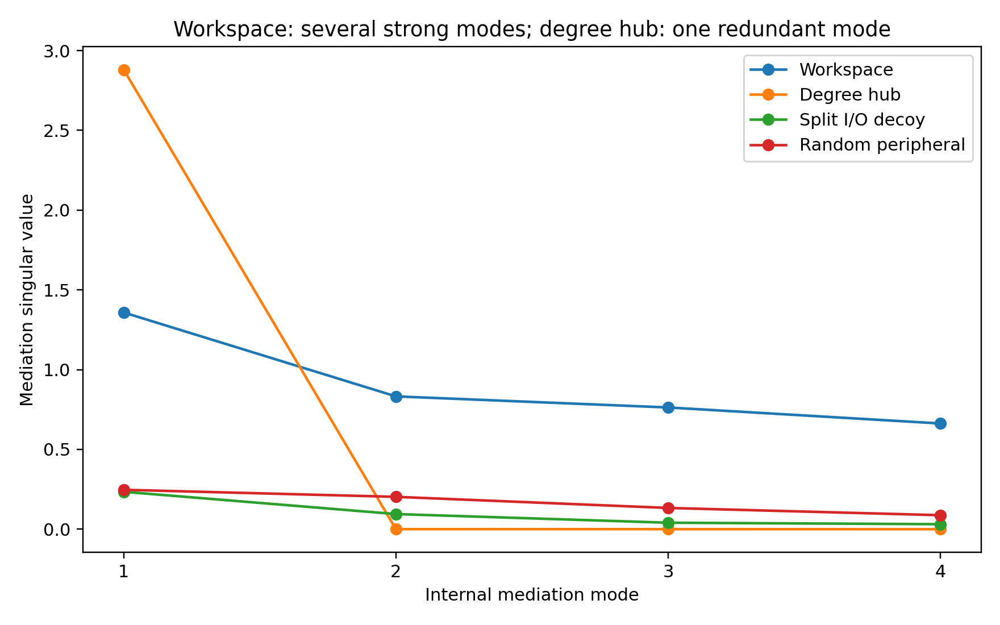
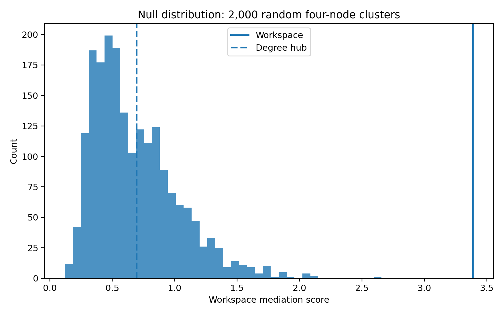
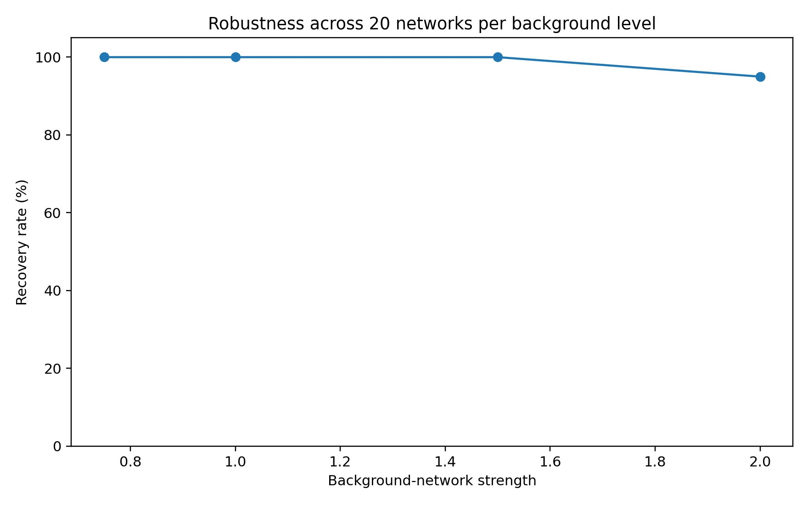
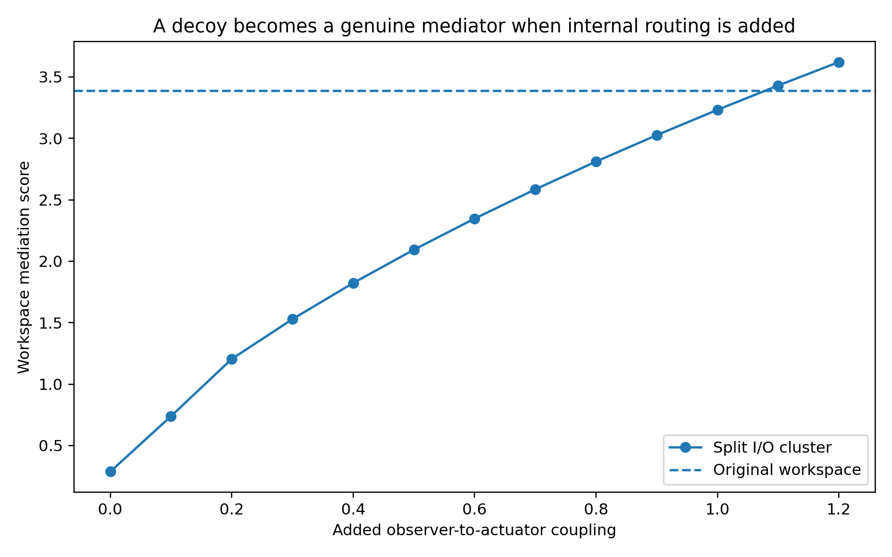

制御理論による
Global Workspace core同定
人工ネットワークに「真のworkspace」「出力専用」「観測専用」「高次数だが低ランクのhub」を埋め込み、controllabilityとobservabilityから真のcoreを回収できるかを検証した。
結論：当初の「残りのネットワークに対するcontrollability × observability」だけでは不十分だった。入力専用ノードと観測専用ノードを寄せ集めたクラスタが、真のworkspaceより高得点になる。しかし、クラスタ内部で、読み込まれた状態が書き出し可能な状態へ変換されることを要求する internal mediation 指標を導入すると、この偽陽性を除去できた。
seed 0では、64ノードから選べる全 635,376 個の4ノード集合を総当たりし、埋め込んだworkspace [48, 49, 50, 51] が第1位となった。近似的なbeam searchを12個の独立なネットワークで繰り返すと、完全回収は 11/12 回で、残る1回も4ノード中3ノードを回収した。
1. 人工ネットワーク
離散時間線形系 x(t+1)=Ax(t) を用いた。ノード数64、specialist moduleは4個（各12ノード）。残り16ノードに次の4種類のクラスタを置いた。
- Workspace (48-51)：各moduleへの異質で双方向な接続と、内部再帰結合を持つ。
- Actuator-only (52-55)：外向きは強いが、外部状態をほとんど読み込まない。
- Observer-only (56-59)：外部状態を強く読み込むが、外部へほとんど作用しない。
- Degree hub (60-63)：接続数は最大だが、4ノードがほぼ同じ入出力パターンを持つため実効的に低ランク。

図1 結合行列 |A|。48-51が真のworkspace、52-55がactuator、56-59がobserver、60-63が高次数hub。
2. 最初の定義と、その失敗
候補クラスタをS、残りをRとする。当初案では、Sを入力点としてRを制御するGramianと、Sを観測点としてRを復元するGramianを作り、その積からjoint access spectrumを得る。
Wc(R|S) = P_R [ Σ A^τ B_S B_Sᵀ (Aᵀ)^τ ] P_Rᵀ
Wo(R|S) = P_R [ Σ (Aᵀ)^τ C_Sᵀ C_S A^τ ] P_Rᵀ
σᵢ(S) = sqrt( eigenvalueᵢ( Wc(R|S) Wo(R|S) ) )
これは「S全体としてRを読み書きできるか」を測る。しかし、S内のあるノードが読むだけ、別のノードが書くだけでも高得点になりうる。実際、actuator 2個とobserver 2個からなる Split I/O decoy は、真のworkspaceより高いexternal scoreを得た。

図2 青が当初のexternal access、橙が修正版internal mediation。Split I/O decoyはexternal accessでは最大になる。
|
Edges |
Write |
Read |
External |
Mediation |
Eff. rank |
WMS |
Lesion drop |
| Cluster |
|
|
|
|
|
|
|
|
| Workspace |
281 |
24.100 |
10.313 |
3.074 |
3.616 |
3.839 |
3.389 |
0.558 |
| Actuator-only |
166 |
38.708 |
0.015 |
0.237 |
0.131 |
3.399 |
0.095 |
0.013 |
| Observer-only |
178 |
0.012 |
47.482 |
0.207 |
0.108 |
3.477 |
0.088 |
0.032 |
| Degree hub |
394 |
11.628 |
17.910 |
0.358 |
2.881 |
1.002 |
0.694 |
0.857 |
| Split I/O decoy |
184 |
21.230 |
12.598 |
4.107 |
0.401 |
2.961 |
0.288 |
0.014 |
| Random peripheral |
111 |
2.945 |
6.733 |
0.837 |
0.670 |
3.731 |
0.620 |
0.229 |
Write/Readは有限時間Gramianのtrace。Lesion dropは候補を除去した際のmodule間dynamic communicability低下率。高次数hubはedge数394、lesion drop 0.857と最大だが、workspaceではないように設計されている。
3. 修正：クラスタ内部の「媒介」を測る
Sが単なるsensorとactuatorの集合ではなく、外部から読み込んだ状態を内部で保持・変換し、再び外部へ書き出すsubsystemであることを要求する。分割したダイナミクスは次の通り。
x_S(t+1) = A_SS x_S(t) + A_SR x_R(t)
y_R(t) = A_RS x_S(t)
ここでRからSへの結合A_SRを入力行列、SからRへの結合A_RSを出力行列として、S内部の有限時間Gramianを計算する。
Ŵc(S) = Σ A_SS^τ A_SR A_SRᵀ (A_SSᵀ)^τ
Ŵo(S) = Σ (A_SSᵀ)^τ A_RSᵀ A_RS A_SS^τ
ηᵢ(S) = sqrt( eigenvalueᵢ( Ŵc(S) Ŵo(S) ) )
ηᵢは、Rから駆動され、かつRへ作用できる同一の内部モードの強さを表す。さらに、ηのeffective rankと、異なるspecialist moduleに対する入出力の広がりGを組み合わせた。
D_eff = exp( -Σ pᵢ log pᵢ ), pᵢ = ηᵢ / Σηⱼ
WMS(S) = (Σηᵢ) × (D_eff / |S|) × G_IO
WMSは Workspace Mediation Score の略称で、この検証用に導入した操作的指標である。

図3 真のworkspaceは4本の強い媒介モードを持つ。高次数hubは第1モードだけが強く、残りはほぼゼロで、冗長な1次元hubである。
4. 回収結果
全探索
seed 0について、4ノード集合を全探索した。真のworkspaceのWMSは 3.389、これを上回る集合は0個で、順位は1位だった。第2位は [48, 49, 50, 63]、WMS=3.239で、真のworkspaceの3ノードを含む。

図4 2,000個のランダム4ノード集合との比較。workspaceは全サンプルを上回った。
独立なネットワークでの探索
乱数seedを変えた12ネットワークで幅50のbeam searchを行った。完全回収は11/12。失敗したseed 6でも、選ばれた集合は [48,49,51,63] で、真のworkspaceの4個中3個を含み、真の集合はbeam内5位だった。
背景結合を強くした頑健性試験
| Background | 300 random setsすべてに勝つ | 埋込decoy群の中で1位 | 平均percentile |
|---|
| 0.75 | 100.0% | 100.0% | 100.000 |
| 1.00 | 100.0% | 100.0% | 100.000 |
| 1.50 | 100.0% | 100.0% | 100.000 |
| 2.00 | 95.0% | 100.0% | 99.983 |
各background強度につき20ネットワーク。random-setの結果は全組合せ探索ではなく、各ネットワーク300集合のサンプルに対する結果。

図5 背景ダイナミクスを2倍まで強くしても、埋込motifの中では全試行でworkspaceが1位だった。
5. 指標は何を「workspace」と呼んでいるのか
Split I/O decoy内部に、observerからactuatorへ情報を渡す結合を人工的に追加した。結合を強めるにつれてWMSは単調に上昇し、結合強度1.1付近で元のworkspaceを上回った。

図6 内部routingを追加すると、もともとの偽クラスタが本物のread-to-write mediatorへ変化し、WMSもそれを追跡する。
したがって、修正版が探しているものは単なる双方向接続ではない。
外部から複数種類の状態を読み込み、クラスタ内部の複数の独立モードに載せ、それらを外部の複数moduleへ因果的に書き戻せる、小さなdynamical mediatorである。
6. 現段階での評価
うまくいった点
- actuator-only、observer-only、split I/O、degree hubを区別できた。
- degreeやlesion impactだけでは拾えない「高次元性」を明示的に評価できた。
- 全探索により、少なくとも設計した線形系ではground truthを回収できることを確認した。
- 内部routingを連続的に操作した試験で、指標の意味が予測通り変化した。
重要な限界
- 人工的ground truthであり、脳のGlobal Workspaceを同定したわけではない。
- 線形・時不変・完全観測のAを仮定した。実データではAの推定誤差、hidden state、非線形性、状態依存性が支配的になりうる。
- 全探索ではクラスタサイズk=4を既知とした。kが未知なら、WMSはノード追加で増えうるため、サイズ罰則またはregularization pathが必要。
- module globalityにはspecialist moduleの分割を事前に与えた。未知の場合はcommunity detectionとの同時推定が必要。
- WMSの積形式は唯一の選択ではない。Pareto評価、null-model z score、minimax型評価との比較が必要。
未知サイズの場合の候補： max_S [ log WMS(S) - λ |S| ]
または、サイズ別null分布とmarginal gainの変化点からminimal coreを選ぶ。
7. 次に行うべき検証
- 推定誤差試験：Aにノイズを加える、短い時系列からVAR/state-space modelでAを推定する、hidden nodesを導入する。
- 非線形・状態依存化：局所線形化、empirical controllability/observability Gramian、Koopman/DMD、switching LDSで覚醒・麻酔・課題状態を比較する。
- 競合指標：degree、participation coefficient、rich-club、communicability、minimum control energy、transfer entropyとの比較。
- 因果検証：候補coreの刺激が多moduleへ広がるか、候補coreの記録から多module状態を復元できるか、そしてcore内のread-to-write pathwayを遮断すると両者の結合が失われるかを試す。
- 脳データ：まず多領域spiking/ECoGなど時間分解能の高い公開データで、状態別のeffective A(t)を推定する。
今回の最も大きな収穫：Global Workspaceを制御理論で定義するなら、「外部を読める」と「外部へ書ける」の併記だけでは足りない。readとwriteが同じ内部ダイナミクスを介して接続されていることが、workspace性の中心的条件になる。